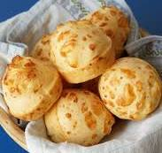

Chipas

Description
This delicious recipe for chipas, or Argentinean breads,
are small balls of cheese bread made from tapioca starch.
They are quick and very easy to make. You could even make
the dough ahead of time and keep it in the freezer. If you
cannot find Argentinean cheeses, Italian cheese will do
just fine.
Ingredients
- cooking spray
- 1 large egg
- 2/3 cup milk
- 6 ounces shredded Italian cheese blend
- 3 tablespoons butter, melted
- 1 3/4 cups tapioca starch
- 1 cup self-rising flour
Steps
- Preheat the oven to 350 degrees F (175 degrees C). Oil a baking sheet with cooking spray and set aside.
- Stir together egg, milk, cheese, and butter in a large bowl. Sprinkle in tapioca starch and flour; stir in to form a dough. Knead dough for 2 minutes on a lightly floured surface, then roll into golf ball-sized pieces and place onto the prepared baking sheet.
- Bake in the preheated oven until golden brown, 10 to 15 minutes.